전기기능사 (2004-10-10 기출문제)
1과목: 전기 이론
1. 1[μF]의 콘덴서에 100[V]의 전압을 가할 때 충전 전하량[C]은?
- 10-4
- 10-5
- 10-8
- 10-10
(정답률: 70%)

2. 강자성체의 투자율에 대한 설명이다. 옳게 된 것은?
- 투자율은 매질의 두께에 비례한다.
- 투자율은 자화력에 따라서 크기가 달라진다.
- 투자율이 큰 것은 자속이 통하기 어렵다.
- 투자율은 자속밀도에 반비례 한다.
(정답률: 45%)
3. 3[Ω]의 저항이 5개, 7[Ω]의 저항이 3개, 114[Ω]의 저항이 1개 있다. 이들을 모두 직렬로 접속할 때의 합성저항[Ω]은?
- 120
- 130
- 150
- 160
(정답률: 87%)
4. 그림과 같은 병렬 회로에서 a, b단자에서 본 역률값은? (단, a, b단자 간에 E[V]의 교류 전압을 가한다.)
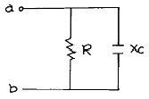
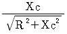
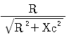
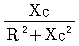
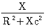
(정답률: 48%)
5. E=100+j20[V] 와 I=20-j30[A]일 때 유효전력 P는 몇[W]인가?
- 1400
- 1600
- 2000
- 2600
(정답률: 28%)
6. 화학당량이란 어떤 값인가?
- 원자량 / 원자가
- 원자가 / 원자량
- 분자량 / 분자가
- 분자가 / 분자량
(정답률: 57%)
7. 발전기의 유도 전압의 방향을 나타내는 법칙은?
- 패러데이의 법칙
- 렌쯔의 법칙
- 오른 나사 법칙
- 플레밍의 오른손 법칙
(정답률: 74%)
8. 상전압 200[V], 1상의 부하 임피던스 Z=3＋j4[Ω ]인 △결선의 선전류[A]는?
- 약 40
- 약 70
- 약 90
- 약 100
(정답률: 39%)
9. 교류회로에 자체인덕턴스가 1[H]인 코일에 200[V], 60[Hz]의 사인파 교류전압을 가했을 때 전류와 전압의 위상차는?
- 전류는 전압보다 위상이 π/2[rad]뒤진다.
- 전류는 전압보다 위상이 π [rad] 뒤진다.
- 전압은 전류보다 위상이 π/2[rad]뒤진다.
- 전압은 전류보다 위상이 π [rad] 뒤진다.
(정답률: 52%)
10. 전기회로에서 저항 R[Ω ]에 전류 I[A]를 T(S)초 동안 흐를 때 그 도체에 발생하는 열을 무엇이라 하는가?
- 옴(Ohm) 열
- 패러데이(Faraday) 열
- 볼타(Volta) 열
- 줄(Joule) 열
(정답률: 81%)
11. 반도체 재료로 GaP와 같은 금속 화합물이 쓰이며, 디지털 계측기나 탁상 계산기의 숫자 표시 등에 사용되는 다이오드 명칭은?
- 광 다이오드
- 제너 다이오드
- 터널 다이오드
- 발광 다이오드
(정답률: 45%)
12. 같은 전구를 직렬로 연결했을 때와 병렬로 연결했을 때 어느 쪽이 더 밝은가?
- 직렬 쪽
- 병렬 쪽
- 같다
- 직렬 쪽이 2배로 밝다
(정답률: 46%)
13. 저항 100[Ω ]의 부하에서 10[㎾]의 전력이 소비되었다면 이 때 흐르는 전류[A]의 값은?
- 1
- 2
- 5
- 10
(정답률: 80%)
14. 자체 인덕턴스 L1, L2, 상호인덕턴스 M인 두 개의 코일의 결합 계수가 1 이면 어떤 관계가 있는가?
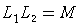
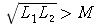
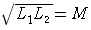
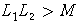
(정답률: 73%)
15. 다음 중 상자성체는 어느 것인가?
- 철
- 코발트
- 니켈
- 텅스텐
(정답률: 67%)
16. 평형 3상 교류 회로에서 △부하의 한 상의 임피던스가 Z△일 때 등가 변환한 Y부하의 한 상의 임피던스 Zp는 얼마 인가?
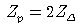
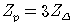
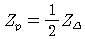
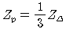
(정답률: 62%)
17. 1[Wb]의 자속을 맞게 설명 한 것은?
- 1권선의 코일과 쇄교하여 1초간의 일정한 비율로 증가하여 1[V]의 기전력을 유도하는 자속이다.
- 1권선의 코일과 쇄교하여 1초간의 일정한 비율로 감소하여 1로 될 때 1[A]의 기전력을 유도하는 자속이다
- 1권선의 코일과 쇄교하여 1초간의 일정한 비율로 감소하여 0으로 될 때 1[A]의 기전력을 유도하는 자속이다.
- 1권선의 코일과 쇄교하여 1초간의 일정한 비율로 감소하여 0으로 될 때 1[V]의 기전력을 유도하는 자속이다.
(정답률: 29%)
18. 어느 전기 회로에서 전압은 전지의 음극을 기준으로 할 때, 전기 회로를 지나 최종적으로 전지의 음극에 돌아오면 그 값은 어떻게 되는가?
- 최대값
- 평균값
- 0
- 최소값
(정답률: 62%)
19. 구리 절연 전선의 굵기가 1.6[㎜]인 경우 허용전류는?
- 16[A]
- 19[A]
- 27[A]
- 35[A]
(정답률: 33%)
20. 한국공업 규격에 연선의 공칭 단면적[㎟]의 최소는?
- 0.1
- 0.9
- 1.0
- 1.2
(정답률: 29%)
2과목: 전기 기기
21. 가요전선관의 크기를 호칭하는 방법은 어느 것인가?
- 안지름에 가까운 홀수
- 안지름에 가까운 짝수
- 금속두께에 가까운 홀수
- 금속두께에 가까운 짝수
(정답률: 33%)
22. 비교적 장력이 적고 다른 종류의 지선을 시설할 수 없는 경우에 적용하며 지선용 근가를 지지물 근원 가까이 매설하여 시설하는 것은?
- 공동지선
- Y지선
- 궁지선
- 수평지선
(정답률: 62%)
23. 접지공사 방법 중 옳지 않은 것은?(관련 규정 개정전 문제로 여기서는 기존 정답인 4번을 누르면 정답 처리됩니다. 자세한 내용은 해설을 참고하세요.)
- 접지극은 지하 75[cm]이상의 깊이에 묻어야 한다.
- 접지선과 수도관의 접속은 접지저항 값이 2[Ω] 이하로 되면 어느 곳에서나 접속할 수 있다.
- 접지선은 저압전로의 중성점에 시설하는 경우 2.6[㎜]이상을 사용한다.
- 접지선은 접지극에서 지표상 2[m]까지의 부분에는 옥내용 절연전선을 사용한다.
(정답률: 45%)
24. 개폐기 중에서 옥내 배선의 분기 회로 보호용에 사용되는 배선용 차단기의 약호는?
- OCB
- ACB
- NFB
- DS
(정답률: 33%)
25. 합성 수지관의 굵기를 부르는 호칭은?
- 반경
- 단면적
- 근사내경
- 근사외경
(정답률: 39%)
26. 안개가 많은 장소나 터널 등의 조명에 적당한 것은?
- 백열전구
- 나트륨등
- 수은등
- 형광 방전등
(정답률: 41%)
27. 최대수용전력이 각각 5[KW], 8[KW], 10[KW], 15[KW], 17[KW]의 수용가에 있어서 그 합성최대 수용전력이 50[KW]이다. 부등률은 얼마인가?
- 0.9
- 1
- 1.1
- 1.2
(정답률: 56%)
28. 3.2[㎜] 이상의 굵은 단선에 사용되는 전선접속법은?
- 브리타니어 접속
- 트위스트 접속
- 슬리브 접속
- 우산형 직선 접속
(정답률: 67%)
29. 에폭시 수지로 고진공으로 변압기에 침투시켜 절연유를 사용하지 않는 변압기로 최근 빌딩의 지하변전실 배전반에 많이 사용하는 변압기는?
- 건식 변압기
- 유입 변압기
- 몰드 변압기
- 타이 변압기
(정답률: 44%)
30. 전기난방 기구의 보호용으로 사용되며 주위온도에 의하여 용단되는 퓨즈는?
- 유리관 퓨즈
- 플러그 퓨즈
- 전동기용 퓨즈
- 온도 퓨즈
(정답률: 76%)
31. 전선 접속법에 관한 설명이 잘못된 것은?
- 접속부분의 전기저항을 증가시켜서는 안 된다.
- 접속 슬리브나 전선 접속기구를 사용하여 접속하거나 또는 납땜을 할 것
- 전선의 강도를 20[％]이상 감소시키지 아니할 것
- 전선 접속 후 절연테이프에 의한 절연방법은 비닐 테이프를 반폭이상 겹쳐서 최소 4번 이상 감는다.
(정답률: 53%)
32. 굴곡이 많고 금속관 공사를 하기 어려울 경우나 전동기와 옥내배선을 결합하는 경우, 또는 엘리베이터 배선 등에 채용되는 공사 방법은?
- 애자 사용 공사
- 합성 수지관 공사
- 금속 몰드 공사
- 가요 전선관 공사
(정답률: 44%)
33. 완목이나 완금이 상하로 움직이는 것을 방지하기 위하여 사용하는 것을 무엇이라 하는가?
- 암 타이
- 지선 밴드
- 래크
- 앵커
(정답률: 50%)
34. 완목이나 완금을 목주에 붙이는 경우에는 볼트를 사용하고 철근 콘크리트주에 붙이는 경우에는 어느 것을 사용하는가?
- 지선 밴드
- 아암 타이
- 아암 밴드
- U볼트
(정답률: 37%)
35. 다음 중 후강 전선관의 최소 굵기[㎜]는?
- 12
- 15
- 16
- 18
(정답률: 43%)
36. 인류하는 곳이나 분기하는 곳에 사용하는 애자는?
- 구형 애자
- 가지 애자
- 새클 애자
- 현수 애자
(정답률: 49%)
37. 케이블 공사에서 케이블의 연피나 부속품은 전기적, 기계적으로 완벽하게 접속하고 몇 종 접지 공사를 하여야 하는가?
- 제 1 종
- 제 2 종
- 제 3 종
- 특별 3 종
(정답률: 64%)
38. 480[V] 가공전선이 철도를 횡단할 때 레일면 상의 최저높이는 몇[m] 인가?
- 4
- 4.5
- 5.5
- 6.5
(정답률: 62%)
39. 흥행장의 무대용 콘센트 박스의 접지공사 방법으로 맞는 것은?
- 제1종접지공사
- 제2종접지공사
- 제3종접지공사
- 특별 제3종접지공사
(정답률: 66%)
40. 점착성이 없으나, 절연성, 내온성 및 내유성이 있으므로 연피케이블의 접속에 사용되는 테이프는?
- 자기 융착 테이프
- 리노 테이프
- 비닐테이프
- 고무 테이프
(정답률: 72%)
3과목: 전기 설비
41. 절연전선을 금속덕트 내에 넣을 경우 금속 덕트의 크기는 전선의 피복 절연물을 포함한 단면적의 총합계가 금속덕트 내단면적의 몇% 이하가 되도록 하여야 하는가?
- 10%
- 20%
- 32%
- 48%
(정답률: 53%)
42. 박스 안에서 가는 전선을 접속할 때에 어떤 접속으로 하는가?
- 슬리브 접속
- 브리타니어 접속
- 쥐꼬리 접속
- 트위스트 접속
(정답률: 74%)
43. 같은 정전용량의 콘덴서 3개를 △결선으로 하면 Y결선으로 한 경우의 몇 배의 용량으로 되는가?
- 1/√3
- 1/3
- 3
- √3
(정답률: 39%)
44. 각 수용가의 수용설비용량의 합이 50kW, 수용률이 65%, 각 수용가사이의 부등률은 1.3, 부하역률 80% 일 때 공급설비용량은 몇 kVA이면 이겠는가?
- 25.38
- 31.25
- 42.25
- 52.38
(정답률: 37%)
45. 지지점의 높이가 같은 철탑에서 경간 200m, 전선의 딥이 4.8m 이면 전선의 실제 길이는 약 몇 m 정도 되는가?
- 195.2
- 198.6
- 200.3
- 204.8
(정답률: 28%)
46. 배전선의 전압을 조정하는 방법으로 적당하지 않은 것은?
- 주상변압기 탭절환
- 유도전압조정기
- 병렬콘덴서
- 승압기
(정답률: 47%)
47. 코트렐장치란?
- 중유의 완전 연소장치
- 미분탄의 완전 연소장치
- 터빈 배기의 효율 증대장치
- 집진장치
(정답률: 30%)
48. 발전기의 자기여자현상을 방지하는 방법이 아닌 것은?
- 발전기와 병렬로 리액턴스를 접속한다.
- 발전기를 2대 이상 병렬 운전한다.
- 주파수를 낮게 하여 충전한다.
- 발전기의 단락비를 작게 한다.
(정답률: 39%)
49. 중유를 가스상태로 분출시키는 여러 가지 종류의 버너 중 대용량의 보일러에 가장 적합한 방식은?
- 증기분사식
- 공기분사식
- 압력분사식
- 선회식
(정답률: 38%)
50. 유량도를 기초로 하여 가로축에는 1년 365일을, 세로축에는 유량을 취하고, 유량이 큰 것부터 순차적으로 배열한 곡선은?
- 적산유량곡선
- 수위유량곡선
- 유량도
- 유황곡선
(정답률: 33%)
51. 열낙차란?
- 단열팽창에 의해 기계적 일로 변환된 열량
- 등온팽창에 의해 기계적 일로 변환된 열량
- 물을 증발시키는데 소비된 열량
- 증기가 보유하고 있는 열량
(정답률: 50%)
52. 수차에서 수격작용을 보완하기 위하여 설치하는 것은?
- 전향장치
- 흡출관
- 조속기
- 수압철관
(정답률: 20%)
53. 유효낙차 100m, 최대 사용수량 20㎥/s, 설비이용률 70%인 수력발전소의 연간 발전전력량은 약 몇 ㎾h 정도인가?
- 45×106
- 80×106
- 100×106
- 120×106
(정답률: 26%)
54. 선로정수를 전체적으로 평형되게 하고, 근접 통신선에 대한 유도장해를 줄일 수 있는 방법은?
- 딥(dip)을 준다.
- 연가를 한다.
- 복도체를 사용한다.
- 소호리액터접지를 한다.
(정답률: 27%)
55. 송전선로에 복도체를 사용하는 이유는?
- 코로나를 방지하고 인덕턴스를 감소시킨다.
- 철탑의 하중을 평형화 한다.
- 선로의 진동을 없앤다.
- 선로의 뇌격으로부터 보호한다.
(정답률: 47%)
56. 표준상태의 기온, 기압하에서 공기의 절연이 파괴되는 전위경도는 정현파 교류의 실효값으로 약 몇 kV/cm 정도 인가?
- 12
- 21
- 30
- 40
(정답률: 31%)
57. 송전선로의 선로상수가 아닌 것은?
- 저항
- 인덕턴스
- 정전용량
- 충전전류
(정답률: 46%)
58. 랭킨사이클의 열효율을 향상시키는 방법이 아닌 것은?
- 터빈 입구의 증기 온도(초기 온도)를 높게 한다.
- 터빈 입구의 증기 압력(초기 압력)을 높게 한다.
- 터빈 출구의 배기 압력을 낮게 한다.
- 터빈 출구의 증기 압력(초기 압력)을 높게 한다.
(정답률: 35%)
59. 일정한 전력을 같은 부하ㆍ같은 역률ㆍ동일 거리 및 동일 손실로 송전하는 경우, 전선의 단면적은?
- 전압의 제곱에 반비례한다.
- 전압에 반비례한다.
- 전압의 제곱에 비례한다.
- 전압에 비례한다.
(정답률: 29%)
60. 가공지선을 사용하는 목적 중 틀린 것은?
- 내부 이상전압에 대한 효과
- 유도뢰에 대한 효과
- 직격뢰에 대한 효과
- 유도 장해의 경감
(정답률: 34%)